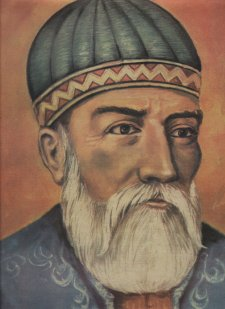

Fuzuli (?-1556)

On altýncý asýrda yaþamýþ büyük þairlerimizdendir. Asýl adý Mehmet'tir. Babasýnýn adý Süleyman'dýr. Fuzuli'yi eserlerinde mahlas olarak kullanmýþtýr. Arapça, Farsça ve Türkçe dillerine hakim olup bu üç dilde de eser veren nadir þairlerden biridir. "Leyla ve Mecnun" eserinin yazarýdýr. Ömrü boyunca maddi sýkýntýlar yaþamýþ ve çok istediði halde Irak topraklarýnýn dýþýna çýkamamýþtýr. Baðdat'ta görülen veba salgýný sonrasýnda vefat etmiþtir. Risale-i Nur'da ayrýlýk ve hüzün duygularýna tercüman olan bir beytiyle zikredilmektedir (Lem'alar, s. 226).Fuzuli'nin hayatý ile ilgili bilgiler çok azdýr. Doðum tarihi kesin olarak bilinmemekle birlikte 1480-1495 yýllarý arasýnda farklý tarihler verilmektedir. Buradaki farklýlýk doðum yeri olarak gösterilen þehir isimlerinde de karþýmýza çýkmaktadýr. Kerbela, Baðdat, Hille, Necef ve Kerkük beldeleri farklý kaynaklar tarafýndan doðum yeri olarak gösterilmektedir. Bazý kaynaklarda isminin Fuzuli-i Baðdadi olarak geçmesi, bazý þiirlerinde "Baðdadi" ifadesinden kaynaklanmakta ve buna dayandýrýlmaktadýr. Buna karþýlýk Türkçe divanýnýn birkaç yerinde Baðdat'tan "diyar-ý gurbet" olarak söz etmesi de, Baðdatlý olmadýðýnýn delili olarak gösterilmektedir.
Fuzuli'nin gerçek adý Mehmet'tir. Mahlas olarak "Fuzuli"yi kullanmýþtýr. Fuzuli; kendisini alakadar etmeyen iþlere karýþýp gereksiz sözler söyleyen kimse anlamýna geldiði gibi, diðer bir anlamý da, yüce, üstün erdemli kimse demektir. Þiirlerde mahlas olarak kullanmak istediði tabirlerin baþkalarý tarafýndan kullanýlmasý, þairlerin isimlerinden çok mahlaslarýnýn ön plana çýkarýlmasý ve doðabilecek karýþýklýklarý önceden önlemek maksadýyla bu mahlasý kullandýðý kendisi tarafýndan Farsça divanýnýn önsözünde dile getirilmektedir (Abdulkadir Karahan; "Fuzûlî", TDVÝA. 13. C. s. 241).
Mehmet, çocukluðunda Arapça ve Farsça'yý bu dillerde þiir yazýp söyleyebilecek kadar güzel bir seviyede öðrendi. Çocukluðundan itibaren dini ve müspet ilimler dallarýnda dersler aldý. Þiir yazmak hususundaki kabiliyeti gençlik yýllarýndan itibaren önemli ölçüde kendisini hissettirmeye baþladý. Ancak, ilim öðrenmeye karþý da büyük bir ihtiyaç hissettiðinden, bu duygusu da bütün mesaisini þiir üzerinde teksif etmesine mani oldu. Böylece kendini tamamen þiire kaptýrmasý önlenmiþ oldu.
Mehmet, ilk eserlerinden olan ve "Beng ü Bade" adýný taþýyan kitabýný Safevi Devletinin kurucu ve hükümdarý olan Þah Ýsmail'e ithaf etti. Bu geliþme Baðdat'ýn 1508 yýlýnda Þah Ýsmail tarafýndan alýnmasýndan sonra meydana geldi. Þair eserinde hayranlýk ve takdir edici ifadelere yer verirken Baðdat'ýn alýnmasý hadisesine de deðindi. Þair, Safeviler tarafýndan Baðdat'a vali olarak tayin edilen Ýbrahim Han tarafýndan yakýn ilgi ve alaka gördü. Baðdat'a götürüldüyse de, Ýbrahim Han'ýn kendi yeðeni tarafýn öldürülmesi üzerine Baðdat'tan ayrýldý.
Osmanlýlarýn Baðdat'ý aldýðý tarih 1534'tür. Fuzuli'nin bu tarihe kadar geçen yedi yýl boyunca ne gibi faaliyetler içinde bulunduðu, nasýl yaþadýðý konusunda aydýnlatýcý bilgiler mevcut deðildir. Baðdat'ýn alýnmasýndan sonra Kanuni'ye beþ kasidesini takdim eden Fuzuli, ayrýca, "Geldi burc-ý evliyaya padiþah-ý namdar" ibaresini eserine kaydetti. Bunun dýþýnda, Osmanlý Devletinin üst makamlarýnda bulunan birkaç kiþiye de kasideler sundu. Bu yolla onlarýn himayesini kazanmaya çalýþtý.
Fuzuli'ye vakýflardan maaþ baðlanacaðýný bildiren Kanuni'nin sözünden sonra, günlüðü dokuz akçe üzerinden ödenmesi, kendisini memnun etmedi. Kendisine tahsis edilen ödenekle ilgili olarak meþhur "Þikayetname"sinde memnuniyetsizliðini dile getirdi. Bu memnuniyetsizliði, daha sonra giderilerek, ödemelerdeki güçlükler de ortadan kaldýrýlmaya çalýþýldý.
Fuzuli, daha sonra birçok üst düzey devlet yöneticisiyle bölgede bulunan idarecilere mektuplar gönderdiði gibi bazý kasidelerini takdim etti. Bu yazýlarýnda, layýk olduðu deðeri görmediði, eserlerine hak ettikleri deðerin verilmediði serzeniþlerine yer verdi. Irak dýþýna çýkýp bazý bölgeleri ziyaret etmek istediyse de bu arzusunu gerçekleþtiremedi. Ömrü Irak'ýn birkaç þehrinde geçti. 1556 yýlýnda Baðdat ve çevresinde görülen veba salgýný birçok kiþinin ölümüne sebep oldu. Bu salgýn hastalýktan kendisi de kurtulamayarak 1556 yýlýnda Kerbela'da vefat etti.
Fuzuli'nin itikadi durumu bir çok araþtýrmacý ve ilim adamý tarafýndan tartýþma konusu olmuþtur. Kendisine Þii diyenler olduðu gibi Rafýzi, Hurufi, Bektaþi vs. diyenler olmuþtur. Bu muhtelif isnatlarýn en önemli sebebi, kendi itikadýný eserlerinde net bir þekilde yansýtmamýþ olmasýdýr. Eserlerindeki kapalý ifadelerden yola çýkan bazý yorumcular, bu sebepten ötür farklý deðerlendirmelerde bulunmuþ ve farklý sonuçlara ulaþmýþlardýr. Bir tarikata baðlý olduðu bilinmekle beraber bu tarikatýn ne olduðu bedihi deðildir. Özellikle on iki imama büyük baðlýðý ile tanýnmaktadýr.
Risale-i Nur'da, Fuzuli'nin ismi, manevi üzüntü içinde, dostlardan ayrýlýðý ve bu ayrýlýktan dolayý duyulan ýzdýrabý yansýtan bir beytiyle zikredilmektedir.
Vaslýný yâd eyledikçe aðlarým
Tâ nefes varsa kuru cismimde feryad eylerim.
Bediüzzaman, yaþýnýn ilerlemesi, buna paralel olarak istirahat arzusu, sevdiklerinden ayrýlýklar ve bu ayrýlýklardan sonra adeta hayalen kaldýrýlan cenazelerin insan ruhunda meydana getirdiði büyük üzüntüyle görünen manzara karþýsýnda Fuzuli'nin bu duygularýna tercüman olan beytine yer vermektedir. Ancak, bütün bu ayrýlýk ve ýzdýraplara raðmen bu dünyanýn imtihan yeri olmasý, ahiret inancýnýn insan ruhunda meydana getirdiði büyük huzur hatýrlatýlarak þikayet ve teessüre yer olmadýðý hatýrlatýlmaktadýr. Ýhtiyarlýða ermenin ayný zamanda vazifeden terhis olmaya, vazifenin bitip istirahat ve mükafata yaklaþmanýn alameti olmasý hasebiyle bakýldýðýnda memnuniyete dönüþeceði nazarlara sunulmaktadýr. Böylece rahmet alemine yaklaþmýþ olmanýn huzuru ve mutluluðu insanýn bedenini sarar (Lem'alar, s. 226).
Ýlim ve irfan sahibi olan Fuzuli, þiir yazabilmeyi Cenab-ý Hakk'ýn bir lütfu olarak sayar. Bu durumun çok az insana nasip olduðunu belirtir. Þiirin özünde sevgi olduðunu, temelini de bilimin oluþturduðunu savunur. Þiir yazmanýn da ilmi bir birikime sahip olmayý gerektirdiðini, aksi takdirde gösterilecek çabanýn ve yazýlanlarýn boþ olduðunu dile getirir. Ýlimsiz þiir yazmayý temelsiz duvara benzetir. Temeli olmayan duvarýn da deðersiz olduðunu ifadelerine ekler. Önceleri aþka dair þiirler yazmasýna raðmen bunun uzun ömürlü olamayacaðýna hükmederek bu tür þiirler yazmayý sürdürmez. Ýlmi birikimi tekmil etmek için büyük bir gayret içine girerek kendini yetiþtirmeye çalýþýr. Bunu da daha seviyeli þiirler yazmak için yapar.
Fuzuli'nin yazý ve þiirlerindeki kabiliyeti, üslubu, þiirlerindeki akýcýlýk, sadelik, insani duygularý mükemmel bir þekilde dile getirmesi, büyük takdir toplamasýna ve divan edebiyatýnýn en büyük þairleri arasýnda sayýlmasýna vesile oldu. Dünyevi lezzetlerin kýymetsizliðiyle beraber, hiç kimsenin pençesinden kurtulamayacaðý ölüm gerçeðini de çok güzel bir tarzda dile getirdi.
Türkçe, Arapça ve Farsça dillerini çok güzel bir þekilde öðrenerek bu üç dilde de eserler vermesi þöhretinin çok geniþ bir alana yayýlmasýna vesile oldu. Özellikle Farsça ve Türkçe dillerinde kaleme aldýðý yazýlarý büyük bir takdir topladý.
Fuzuli, çok sayýda eser yazan þairlerimizdendir. Bunlar manzum ve nesir olmak üzere on beþ eserden oluþmaktadýr. Arapça, Farsça ve Türkçe dilleriyle yazýlmýþ üç divaný vardýr. Leyla ve Mecnun, Beng u Bade, Hadisi-i Erbain Tercümesi, Sohbetü'l-esmar, Hadikatü's-süeda adlý eserleri Türkçe olarak kaleme almýþ, ayrýca Türkçe yazmýþ olduðu mektuplarý da vardýr. Matlaü'l-itikad adlý eserini Arapça olarak yazmýþtýr. Heft cam, Enisü'l-kalb, Risale-i Muammeyat, Rind ü Zahid, Hüsn ü Aþk adlý eserlerini de Farsça olarak kaleme almýþtýr.
Fuzuli, deðiþik kesimler tarafýndan þiirleri bestelenen nadir þairlerimizdendir. "Beni candan usandýrdý cefadan yar usanmaz mý" bestelenen ünlü eserlerindendir. Aradan asýrlar geçmesine raðmen halen þiirlerinin çalýþmalara ve bestelere konu olmasý, saygýnlýðý olan kiþiler tarafýndan incelenmesi, þairin deðerini daha da arttýrmaktadýr.